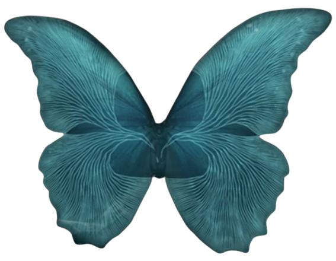

Stranded at a remote mountain retreat, eight friends find their winter getaway spiraling into a terrifying nightmare as they are forced to confront the dark shadows of their past. Within the freezing silence of Blackwood Pines, trust is their only lifeline—yet as fear and tension mount, their loyalties will be pushed to the breaking point. As the night unfolds, they will discover that the secrets buried among them aren't the only dangers lurking in the mountain’s depths. Will they survive until dawn?
Until Dawn is built upon a unique Butterfly Effect system, where every decision you make is woven into the very fabric of the story. The smallest dialogue choice or a split-second reaction can set a series of dominoes in motion, altering the fates of the characters forever.The power to strengthen or shatter the bonds between characters lies in your hands. Remember: your choices determine not only who remains friends, but who will live to see the sunrise. In this story, there are no 'wrong' choices—only consequences. Everyone can live. Everyone can die.
Dive into a thrilling narrative where every choice shapes their fate.
Get to know eight young people struggling to survive.
Are you wondering which character in the game you resemble?
Minimum System Requirements
Recommended System Requirements